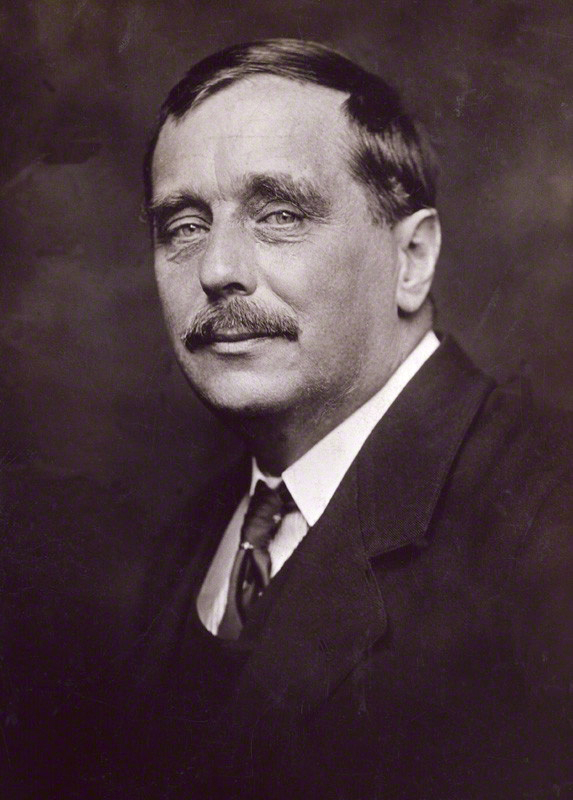

H. G. Wells
Yksi mahdoton oletus paljastaa tutun maailman.
Wells tekee tieteellisestä ajatuskokeesta jännittävän kertomuksen. Tulevaisuus ja vieras uhka näyttävät samalla jotakin oman ajan yhteiskunnasta.
Etsi teokset kirjastostaElämä ja teokset
Herbert George Wells syntyi Englannissa vuonna 1866. Hän opiskeli biologiaa ja kirjoitti laajasti kaunokirjallisuutta, historiaa ja yhteiskunnallisia tekstejä. Hänen kiinnostuksensa tieteeseen näkyy erityisesti varhaisissa tieteiskertomuksissa.
Aikakone ilmestyi vuonna 1895 ja Maailmojen sota vuonna 1898. Ne kuuluvat teoksiin, joilla Wells muovasi modernin tieteiskirjallisuuden kuvastoa. Hän kirjoitti myös realistisia romaaneja ja osallistui aikansa poliittiseen keskusteluun.
Tyyli ja teemat
Arkiset havainnot tekevät poikkeuksellisesta tapahtumasta uskottavan. Kertomus kysyy, miten ihminen käyttäytyy, kun tutut mittasuhteet, valta-asemat tai turvallisuuden takeet katoavat. Seikkailun taustalla kulkee epäily siitä, mihin kehitys oikeastaan johtaa.
Tulevaisuus · Kehitys · Valta
Aloita tästä
Aikakone
Matka kaukaiseen tulevaisuuteen murentaa uskoa ihmiskunnan suoraviivaiseen edistykseen. Tiivis tieteiskertomus ajasta, luokasta ja muutoksesta.
Maailmojen sota
Marsilaisten hyökkäys kääntää ihmisen aseman luonnon ja tekniikan hallitsijana päälaelleen. Selviytymiskertomus tutun maailman äkillisestä murtumisesta.
Lue vierasta maailmaa myös oman maailman peilinä: kenen näkökulmasta voima näyttää oikeudelta?